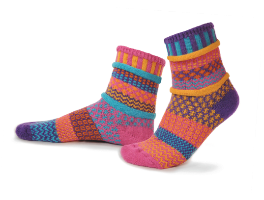
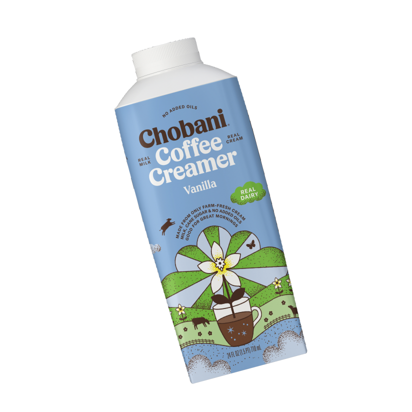
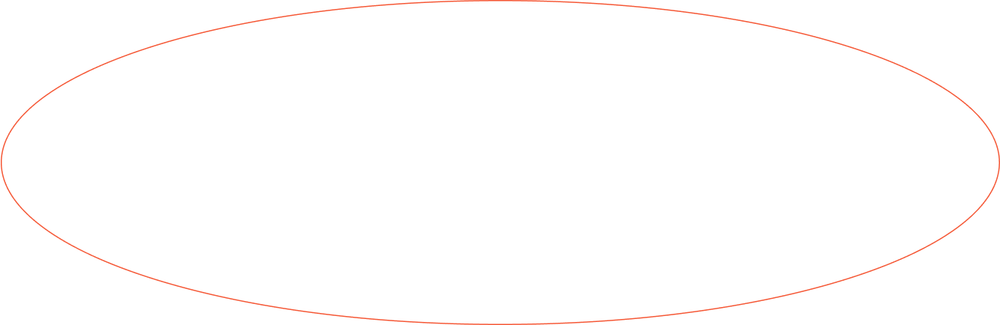
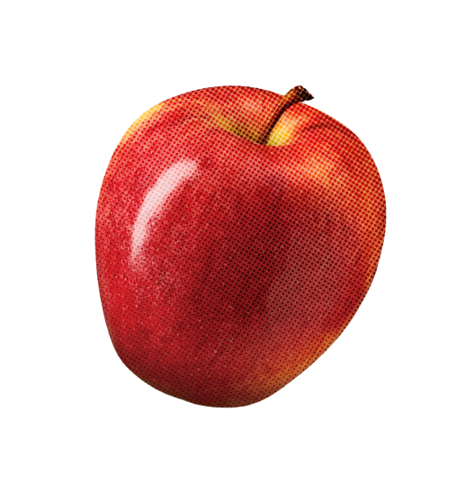
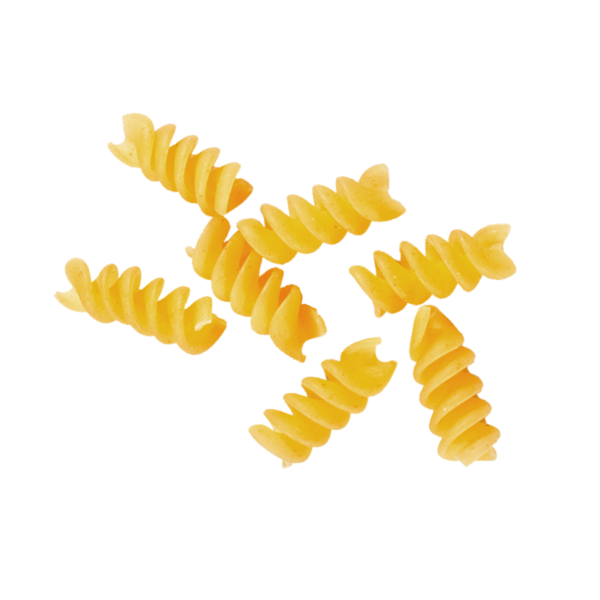

This website was designed to engage the public with the idea of cognitive labor and create a broader
understanding of this invisible, yet ubiquitous, facet of household work.
Each section highlights
aspects of the research process undertaken to complete the project.
It can be a source of tension between couples. Given this work’s invisible nature, individuals may believe their efforts are unappreciated, causing friction in the home.
Being cognizant of this type of labor is important so we can
better account for the inequities that exist within the home and to work towards a more equitable division
of labor in the home.
This is a gendered phenomenon where, oftentimes, women take on more of the cognitive labor than their partner.
Invisible Household Labor and Ramifications for Adjustment: Mothers as Captains of Household. Lucia Ciciolla,
Suniya S. Luthar (2019).
The laundry needs to be taken out of the wash and dried today.
I need to food prep dinner this morning so it won’t take as long tonight when we all get home.
Also referred to as the mental load, it can be described as the non-physical tasks that are difficult to pinpoint, mentioned in passing and imprecisely defined.
I need to move some money over to
our savings account so we can have that reserve for our upcoming trip.
Shoot. The birthday party is next week. I need to choose a gift and make sure it arrives in time.
We’re running low on coffee. Might as well buy this one while I’m here at the store since it’s on sale.
I can’t forget to call the doctor’s office and schedule my check-up.
This store is out of creamer but I bet I can find it at their other one because it’s never as crowded and busy.
We didn’t finish the grapes. We should buy apples instead this week.
Did we add the pasta to the grocery list for this week’s run?


It can feel like a never-ending mental checklist of things you need to do or remember.



How can we better recognize and value the invisible work it takes to manage a home? This project is an inquiry into how to make the invisible dimensions of household work visible and tangible for people in their homes.
of cognitive labor
The invisible weight